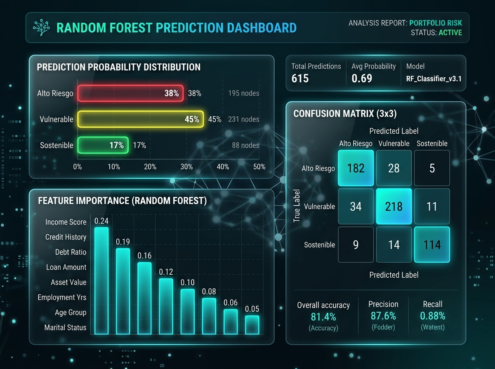
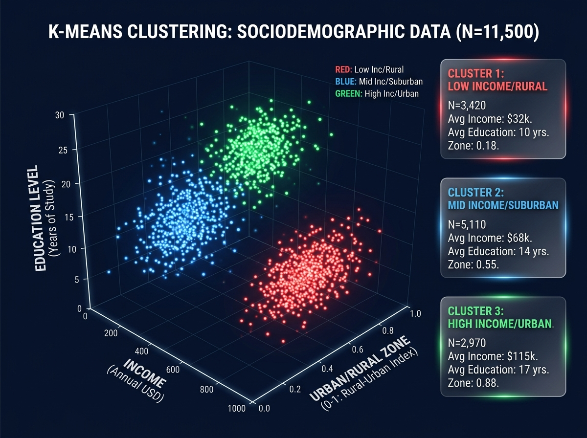
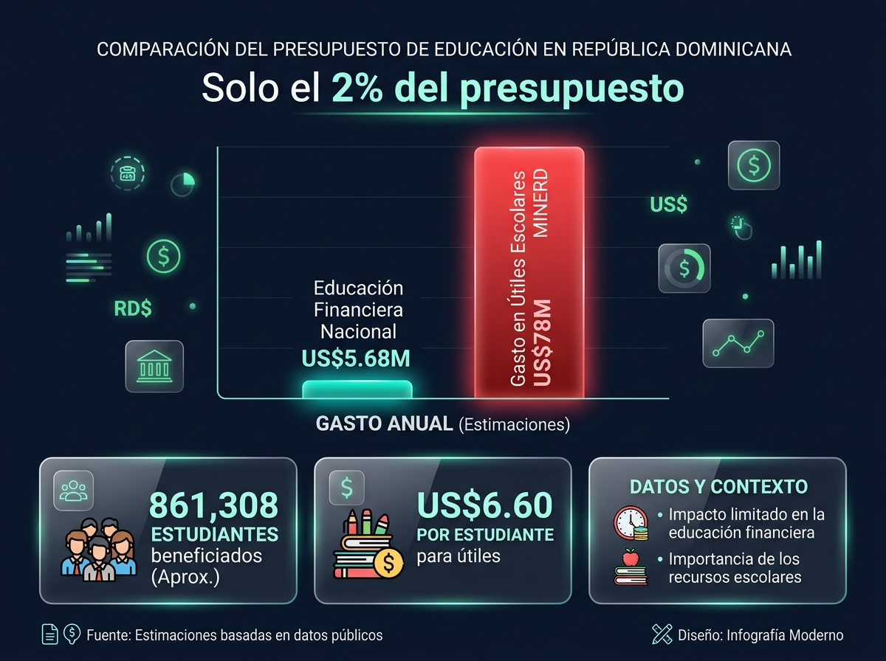
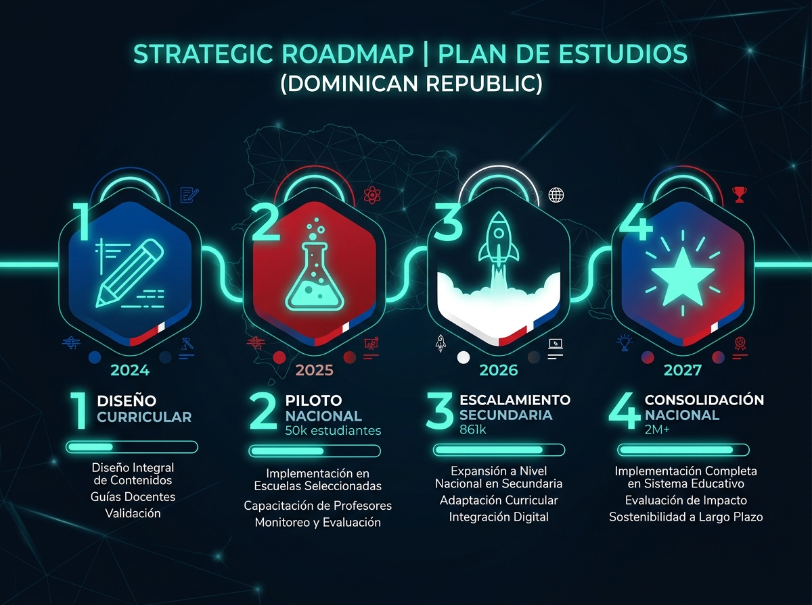

Diagnóstico, IA & Estrategia de Educación Financiera en RD
Plataforma interactiva con Inteligencia Artificial (Random Forest & K-Means), simulación de costo-efectividad y diagnóstico nacional basada en datos oficiales del BCRD, MINERD, BID y OCDE.
6 Módulos de Análisis y Decisión
La plataforma integra diagnóstico empírico, modelos de Machine Learning, segmentación poblacional y simulación de políticas públicas en una sola interfaz.
Inicio y Diagnóstico Nacional
KPIs clave de inclusión financiera, evolución 2019-2023 (ENIF/ENIEF), matrícula escolar 2024-2025 y brecha de género en el sistema financiero dominicano.
Visualización InteractivaPredictor de Riesgo IA (Random Forest)
Formulario en tiempo real para clasificar perfiles ciudadanos en Alto Riesgo, Vulnerable o Sostenible con probabilidades y recomendaciones estratégicas.
Machine LearningSegmentación Poblacional (K-Means)
Visualización 3D interactiva de clusters sociodemográficos con estadísticas de ingreso, bancarización y nivel educativo por segmento.
Clustering No SupervisadoCalculadora Costo-Efectividad
Simulador de escenarios presupuestarios (Piloto 50K → Nacional 2M+). Ajuste dinámico de costo unitario y tasa de cambio con comparativa vs. gasto educativo.
Simulación de PolíticasProgramas y Hoja de Ruta
Catálogo de 5 programas educativos por nivel (Primaria→Docentes) y cronograma de 4 fases institucionales con barra de progreso cronológico.
Estrategia NacionalFuentes y Exportación de Datos
Descarga del dataset sintético calibrado (3,000 registros CSV) y de fuentes oficiales. Vínculos directos a publicaciones del BCRD, SB, MINERD, BID, OCDE y UNESCO.
Open DataTecnología al Servicio de la Política Pública
🤖 Predictor de Vulnerabilidad Económica con Random Forest
El modelo entrena sobre 3,000 registros calibrados con las tasas empíricas reales de la ENIEF 2023, incluyendo distribuciones lognormales de ingreso y scores logísticos de bancarización.
- Clasificación en 3 perfiles: Alto Riesgo · Vulnerable · Sostenible
- Distribución de probabilidades en tiempo real por perfil
- Importancia de características (Feature Importances)
- Matriz de confusión 3×3 con gradient de color
- Recomendaciones estratégicas personalizadas por perfil

📊 Segmentación K-Means en Visualización 3D Interactiva
Algoritmo de clustering no supervisado identifica automáticamente 3 segmentos sociodemográficos de la población dominicana basados en ingreso, zona geográfica y nivel educativo.
- Segmento Vulnerable Rural — baja bancarización e ingreso
- Segmento Urbano Promedio — ingreso medio, acceso parcial
- Segmento Consolidado — bancarizado con educación financiera
- Scatter 3D en escala logarítmica con 1,000 puntos muestreados
- Tabla estadística comparativa por cluster

💰 Simulador de Costo-Efectividad Presupuestaria
Basado en la evaluación experimental del BID (Frisancho, 2017) — Piloto Finanzas en mi Colegio en Perú — el simulador demuestra que la cobertura nacional secundaria requiere US$5.68M, menos del 2% del gasto anual en paquetes escolares del MINERD.
- US$6.60 por estudiante/año — costo validado por el BID
- +0.14 DE en conocimiento estudiantil · +0.30 DE en docentes
- 4 escenarios: Piloto → Secundaria → Total Público → Personalizado
- Ajuste dinámico de tasa de cambio RD$/USD

🎯 Hoja de Ruta Estratégica en 4 Fases
Propuesta concreta para la curricularización obligatoria de la Educación Económica y Financiera en el sistema educativo dominicano, con cronograma institucional de implementación 2024-2027.
- Fase 1 · 2024 — Diseño Curricular e Instrumentos
- Fase 2 · 2025 — Piloto Nacional 50,000 estudiantes
- Fase 3 · 2026 — Escalamiento Secundaria 861,308
- Fase 4 · 2027 — Consolidación Nacional 2M+ estudiantes
- Actores: BCRD · MINERD · SB · INAFOCAM · BID

Construido con Herramientas de Clase Mundial
Ecosistema Python moderno para análisis de datos, machine learning y despliegue de aplicaciones interactivas de ciencia de datos.
Python 3.10+
Lenguaje PrincipalStreamlit
v1.30+ · Web FrameworkScikit-Learn
v1.3+ · Random Forest & K-MeansPandas
v2.0+ · DataFramesNumPy
v1.24+ · Arrays & MathPlotly
v5.15+ · Gráficos 3D/InteractivosSeaborn + Matplotlib
Visualizaciones JupyterJupyter Notebook
Análisis ReproducibleFlujo de Arquitectura del Sistema
Fuentes de Datos
data.pyML Engine
ml_engine.pyWeb App
app.pyInterfaz Usuario
localhost:8501Basado en Fuentes Institucionales Verificadas
Todos los parámetros del dataset sintético están calibrados con datos empíricos de encuestas nacionales e investigaciones experimentales internacionales.
Banco Central de la RD (BCRD)
Primera y Segunda Encuesta Nacional de Inclusión Financiera (ENIF 2019 / ENIEF 2023). Tasas de bancarización, productos financieros y alfabetización financiera.
Superintendencia de Bancos (SB)
Informe "Hacia un Sistema Financiero Inclusivo y Sostenible 2025". Indicadores de morosidad, crédito de consumo y brecha de género en el sistema financiero formal.
Ministerio de Educación (MINERD)
Datos de matrícula escolar 2024-2025 por nivel. Acuerdo Marco de Educación Financiera Escolar con Banreservas (2024). Gasto en paquetes escolares.
Banco Interamericano de Desarrollo (BID)
Frisancho, V. (2017): Evaluación experimental del piloto "Finanzas en mi Colegio" en Perú. Fuente del costo unitario US$6.60 y efectos +0.14/+0.30 DE.
OCDE / INFE
Encuesta Internacional de Alfabetización Financiera de Adultos (2020). Parámetros comparativos de educación financiera y referencia metodológica internacional.
UNESCO / Evidencia Experimental
Marco internacional de competencias de educación financiera para jóvenes. Evidencia de impacto de programas de educación financiera escolar en países de ingresos medios.
Ejecutar el Proyecto Localmente
Requisito: Python 3.10+ y pip instalados. La aplicación corre completamente en local en menos de 2 minutos.
cd "Practica final Python 2026"
# 2. Instalar dependencias
pip install -r requirements.txt
# 3a. Ejecutar vía script principal
python main.py
# 3b. O directamente con Streamlit
streamlit run app.py
✓ Local URL: http://localhost:8501
✓ Network URL: http://192.168.x.x:8501
Verificar Python
Asegúrese de tener Python 3.10+ instalado. python --version
Instalar Dependencias
El archivo requirements.txt incluye Streamlit, Pandas, NumPy, Scikit-Learn, Plotly, Seaborn y Matplotlib.
Lanzar la Aplicación
Ejecute python main.py. El navegador se abrirá automáticamente en localhost:8501.
Explorar el Cuaderno
Para el análisis paso a paso y entrenamiento del modelo con Jupyter Notebook, abra el archivo .ipynb.
¿Listo para explorar el análisis?
Esta plataforma es una propuesta de política pública basada en evidencia para la curricularización de la Educación Financiera en República Dominicana.